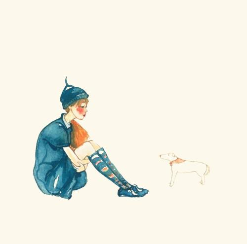

前言 记录我在学习小程序期间了解到的一些零散的知识点以及需要注意的问题。
一、知识点 1.小程序版本： 1.预览版本：点击“预览”，在真机上预览；
2.开发版本：上传代码之后，开发者具有开发者权限之后通过“小程序开发助手”看到的版本；
3.体验版本：在管理后台，将开发版本直接切换为体验版本，具有体验权限的人员可以看到体验版本；
4.审核版本：想要将开发版本或者体验版本上线，提交审核之后就是审核版本
5.线上版本：通过审核之后就是线上版本。
2.关于开发者工具上的一些按钮 “测试”按钮：每24小时生成一个测试报告，微信随机分配4到8种机型来测试小程序。
“腾讯云”：第三方平台，帮助我们快速的构建小程序开发环境和线上环境。
3.小程序开发框架 1.wxml：相当于HTML5中的html；
2.wxss：相当于HTML5中的css；
3.js：就是HTML5中的js；
4.wxs：对wxml增强的脚本语言，对请求到的数据进行处理，帮助wxml快速构建出页面内容结构。
4.wxml的四个特性： 1.数据绑定
2.列表渲染
3.条件渲染
wx:if和hidden比较：
wx:if ：局部渲染，更高的切换消耗
4.模板引用
import：把<templete/>标注的以外的代码全部copy过来当前位置
include：而import则是相反，只引用模板
5.小程序启动 1、冷启动：首次打开或者被微信销毁后再次打开
2、热启动：当用户打开过小程序，再次打开小程序
6.小程序什么情况下会被销毁？ 两种情况：
（1）当小程序保持状态5分钟之后
（2）短时间收到两次系统告警
7.小程序应用生命周期-四个钩子： （1）onLaunch：app.js派发onLaunch
（2）onShow：从后台到前台
（3）onHide：从前台到后台
（4）onError：发生脚本错误
8.小程序页面生命周期-四个钩子： （1）onLoad：页面初次加载时调用
（2）onShow：初次打开页面或者从别的页面返回到当前页面
（3）onReady：页面渲染完成之后调用，在onShow方法之后调用
（4）onHide：当前页面打开新的页面，当前页面触发onHide方法
（5）onUnload：关闭当前页面时，会触发当前页面onUnload方法
9.页面路由
路由方式
页面栈表现
初始化
新页面入栈
打开新页面
新页面入栈
页面重定向
当前页面出栈，新页面入栈
页面返回
页面不断出栈，直到目标返回页，新页面入栈
Tab切换
页面全部出栈，只留下新的tab页面
重加载
页面全部出栈，只留下新的页面
路由方式
触发时机
路由前页面
路由后页面
初始化
小程序打开的第一个页面
onLoad,onShow
打开新页面
调用APIwx.navigateTo 或使用组件<navigator open-type="navigateTo"/>
onHide
onLoad,onShow
页面重定向
调用APIwx.redirectTo 或使用组件<navigator open-type="redirectTo"/>
onUnload
onLoad,onShow
页面返回
调用APIwx.navigateBack 或使用组件<navigator open-type="navigateBack"/>
onUnload
onShow
Tab切换
调用APIwx.switchTab 或使用组件<navigator open-type="switchTab"/>
重加载
调用APIwx.reLaunch 或使用组件 <navigator open-type="reLaunch"/>
onUnload
onLoad,onShow
10.事件对象属性 type：事件类型
timeStamp：时间戳
target：触发事件的根源组件的信息
currentTarget：事件绑定的当前组件的信息
detail：事件携带的额外信息。比如：点击事件中,x、y表示触摸点距离屏幕上方和左边的距离
changedTouches：表示有变化的触摸点。比如触摸点位置的变化以及触摸点从有到无的变化等。
touches：停留在屏幕上的触摸点的信息
二、注意的问题 实现思路：给input的value值设置一个变量，点击”x”时，让这个变量值为空。
1 2 3 4 5 6 7 8 9 10 11 12 13 14 15 16 17 18 19 20 21 22 23 24 25 26 27 <input type ='number' class ='input-tel-box' value ='{{inputValue}}' maxlength ="11" bindinput ="telInput" > </input > <view class ='delete-number' wx:if ="{{isShow}}" > <image src ='../img/delete-psd.png' class ='delete-number-icon' > </image > </view > Page({ data: { isShow: false, inputValue: '' }, telInput: function (e) { if(e.detail.value != ""){ this.setData({ isShow: true }) }else{ this.setData({ isShow: false }) } this.setData({ inputValue: e.detail.value }); }, emptyTel: function (e) { this.setData({ inputValue: "", isShow: false }); }, })
2.自定义checkbox组件和radio组件的样式 如何自定义checkbox的样式？
1 2 3 4 5 6 7 8 9 10 11 12 13 14 15 16 17 18 19 20 21 22 23 24 25 26 27 checkbox .wx-checkbox-input { border-radius : 50% ; width : 40 rpx; border : 1 rpx solid #ff3366 ; margin-right : 20 rpx; margin-top : -4 rpx; } checkbox .wx-checkbox-input .wx-checkbox-input-checked { border : 1 rpx solid #ff3366 ; background : #ff3366 ; } checkbox .wx-checkbox-input .wx-checkbox-input-checked ::before { border-radius : 50% ; width : 40 rpx; height : 40 rpx; line-height : 40 rpx; text-align : center; font-size :30 rpx; color :#fff ; background : transparent; transform :translate (-50% , -50% ) scale (1 ); -webkit-transform :translate (-50% , -50% ) scale (1 ); }
如何自定义radio的样式？
1 2 3 4 5 6 7 8 9 10 11 12 13 14 15 16 17 18 19 20 21 22 23 24 25 26 27 radio .wx-radio-input { border-radius : 50% ; width : 48 rpx; height : 48 rpx; } radio .wx-radio-input .wx-radio-input-checked { border : none; } radio .wx-radio-input .wx-radio-input-checked ::before { border-radius : 50% ; width : 48 rpx; height : 48 rpx; line-height : 48 rpx; text-align : center; font-size :30 rpx; color :#fff ; background : transparent; transform :translate (-50% , -50% ) scale (1 ); -webkit-transform :translate (-50% , -50% ) scale (1 ); border : 1 rpx solid #e33340 ; background : #e33340 ; }
3.省市区选择器实现省市区三级联动 1 2 3 4 5 6 7 8 9 10 11 12 13 14 15 16 17 18 19 20 21 22 23 24 25 26 27 <picker mode ="region" bindchange ="bindRegionChange" value ="{{region}}" custom-item ="{{customItem}}" style ='width:100%;' > <view wx:if ="{{area}}" > <text class ="seletedText" > 选择省、市、区</text > </view > <view wx:else > <input class ='address-input' value ='{{region[0]}}，{{region[1]}}，{{region[2]}}' name ="region" /> </view > </picker > Page({ data: { // 选择省市区 area: true, region: ['广东省', '惠州市', '惠城区'] }, // 选择省市区 bindRegionChange: function (res) { this.setData({ region: res.detail.value, area: false }) }, })
4.如何删除数组中的元素? 需求：点击删除时，删除这个元素
重点：如何点击删除时，获取这个数组元素的索引？
使用 wx:for-index="xxx" 可以指定数组当前下标的变量名，使用data-xxx="" 给元素自定义索引
如果没有定义wx:for-index="idx" ,可以直接在子元素上定义data-index="" 因为默认数组的当前项的下标变量名默认为 index
1 2 3 4 5 6 7 8 9 10 11 12 13 14 15 16 17 18 19 20 <view class ='goods-lists-item clearfix' wx:for ="{{goodsList}}" wx:for-index ="idx" wx:key ="index" > <view class ='name' > {{item.name}}</view > <view class ='delete' bindtap ='delete' data-idx ="{{idx}}" > <text > 删除</text > </view > </view > Page({ delete(e){ var that = this; var index = e.currentTarget.dataset.idx; var goodsList = that.data.goodsList; goodsList.splice(index, 1); that.setData({ goodsList: goodsList }) } })
5.如何在video组件上添加按钮? 由于video组件的层级太高，要想在它上面加元素，使用z-index 是不管用的。只能使用官方提供的方法cover-view 。
1 2 3 4 5 6 7 8 9 10 11 12 13 14 15 16 17 18 19 20 21 22 23 24 25 26 27 28 29 30 31 32 33 34 35 36 37 38 39 40 41 42 43 44 45 46 47 48 49 <video id ="myVideo" src ="http://wxsnsdy.tc.qq.com/105/20210/snsdyvideodownload?filekey=30280201010421301f0201690402534804102ca905ce620b1241b726bc41dcff44e00204012882540400&bizid=1023&hy=SH&fileparam=302c020101042530230204136ffd93020457e3c4ff02024ef202031e8d7f02030f42400204045a320a0201000400" controls ="{{false}}" event-model ="bubble" > <cover-view class ="controls" > <cover-view class ="play" bindtap ="play" > <cover-image class ="img" src ="/path/to/icon_play" /> </cover-view > <cover-view class ="pause" bindtap ="pause" > <cover-image class ="img" src ="/path/to/icon_pause" /> </cover-view > <cover-view class ="time" > 00:00</cover-view > </cover-view > </video > .controls { position: relative; top: 50%; height: 50px; margin-top: -25px; display: flex; } .play,.pause,.time { flex: 1; height: 100%; } .time { text-align: center; background-color: rgba(0, 0, 0, .5); color: white; line-height: 50px; } .img { width: 40px; height: 40px; margin: 5px auto; } Page({ onReady() { this.videoCtx = wx.createVideoContext('myVideo') }, play() { this.videoCtx.play() }, pause() { this.videoCtx.pause() } })
6.实现动画 1 2 3 4 5 6 7 8 9 10 11 12 13 14 15 16 17 18 19 20 21 22 23 24 25 26 27 28 29 30 <view class ="demo" bindtap ="click" animation ="{{animationData}}" > </view > .demo{ width: 200rpx; height: 200rpx; background: red; } Page({ data: { animationData:"", }, click:function(){ //创建动画 var animation = wx.createAnimation({ duration: 4000, timingFunction: "ease", delay: 0, transformOrigin: "50% 50%", }) animation.rotate(45).scale(0.8).translate(10,10).step(); //边旋转边放大 //导出动画数据传递给组件的animation属性。 this.setData({ animationData: animation.export(), }) }, })
7.小程序长按事件 1 2 3 4 5 6 7 8 9 10 11 12 13 14 15 16 17 18 19 20 21 22 23 24 25 26 27 28 29 30 31 32 33 34 35 36 37 38 39 40 41 42 43 44 Page({ data: { isShow: false, isChange: false, topValue: 0, leftValue: 0 }, editAddress: function (event) { let that = this; //触摸时间距离页面打开的毫秒数 var touchTime = that.data.touch_end - that.data.touch_start; //如果按下时间大于350为长按 if (touchTime > 350) { this.setData({ isShow: true }) } else { wx.navigateTo({ url: '../order/order', }) } }, //按下事件开始 mytouchstart: function (e) { // 长按事件手指接触屏幕的位置 var leftValue = e.touches[0].pageX; var topValue = e.touches[0].pageY; let that = this; that.setData({ topValue: topValue, leftValue: leftValue, isChange: true, touch_start: e.timeStamp }) }, //按下事件结束 mytouchend: function (e) { let that = this; that.setData({ touch_end: e.timeStamp }) }, })
8.小程序冒泡事件/非冒泡事件 1 bind事件绑定不会阻止冒泡事件向上冒泡，catch事件绑定可以阻止冒泡事件向上冒泡。
9.拨打电话接口wx.makePhoneCall 1 2 3 4 5 6 7 8 9 10 11 12 13 14 15 16 17 <button bindtap ='calling' > 12345678901</button > Page({ calling:function(){ wx.makePhoneCall({ phoneNumber: '12345678900', //此号码并非真实电话号码，仅用于测试 success:function(){ console.log("拨打电话成功！") }, fail:function(){ console.log("拨打电话失败！") } }) } })
10.实现连续动画 1 2 3 4 5 6 7 8 9 10 11 12 13 14 15 16 17 18 19 20 21 22 23 24 25 26 27 28 29 30 31 32 33 34 35 36 37 38 39 <image class ='news-dialog' src ="../img/news-dialog.png" animation ="{{animationData}}" > </image > Page({ /** * 页面的初始数据 */ data: { animationData: {} }, /** * 生命周期函数--监听页面显示 */ onShow: function () { var animation = wx.createAnimation({ timingFunction: 'linear', }) this.animation = animation this.setData({ animationData: animation.export() }) var n = 0; var m = true; //连续动画需要添加定时器,所传参数每次+1就行 setInterval(function () { n = n + 1; if (m) { this.animation.translate(0, -5).step(); m = !m; } else { this.animation.translate(0, 5).step(); m = !m; } this.setData({ animationData: this.animation.export() }) }.bind(this), 600) }, })
11.滚动消息 1 2 3 4 5 6 7 8 9 10 11 12 13 14 15 16 17 18 19 20 21 22 23 24 25 26 27 28 29 30 31 32 33 34 35 36 37 38 39 <swiper class ="swiper_container" vertical ="true" autoplay ="true" circular ="true" interval ="2000" > <block wx:for ="{{msgList}}" > <navigator url ="/pages/index/index?title={{item.url}}" open-type ="navigate" > <swiper-item > <view class ="swiper_item" > {{item.title}}</view > </swiper-item > </navigator > </block > </swiper > .swiper_container { height: 55rpx; width: 80vw; } .swiper_item { font-size: 25rpx; overflow: hidden; text-overflow: ellipsis; white-space: nowrap; letter-spacing: 2px; } var app = getApp() Page({ data: { }, onLoad(e) { console.log(e.title) this.setData({ msgList: [ { url: "url", title: "公告：多地首套房贷利率上浮 热点城市渐迎零折扣时代" }, { url: "url", title: "公告：悦如公寓三周年生日趴邀你免费吃喝欢唱" }, { url: "url", title: "公告：你想和一群有志青年一起过生日嘛？" }] }); } })
12.微信小程序之swiper轮播图中的图片自适应高度的方法 1 2 3 4 5 6 7 8 9 10 11 12 13 14 15 16 17 18 19 20 21 22 23 24 25 26 27 28 29 30 31 32 33 34 35 <swiper indicator-dots ="{{indicatorDots}}" autoplay ="{{autoplay}}" interval ="{{interval}}" duration ="{{duration}}" indicator-active-color ="{{bg}}" style ='height:{{Height}}' > <block wx:for ="{{imgUrls}}" > <swiper-item > <image src ="{{item}}" class ="slide-image" mode ="widthFix" bindload ='imgHeight' /> </swiper-item > </block > </swiper > .slide-image{ width: 100%; } data: { imgUrls: [ '../img/goodsDetail/goods.png', '../img/goodsDetail/goods.png', '../img/goodsDetail/goods.png' ], indicatorDots: true, autoplay: true, interval: 5000, duration: 1300, bg: '#C79C77', Height:"" //这是swiper要动态设置的高度属性 }, imgHeight:function(e){ var winWid = wx.getSystemInfoSync().windowWidth; //获取当前屏幕的宽度 var imgh=e.detail.height;//图片高度 var imgw=e.detail.width;//图片宽度 var swiperH=winWid*imgh/imgw + "px"//等比设置swiper的高度。 即 屏幕宽度 / swiper高度 = 图片宽度 / 图片高度 ==》swiper高度 = 屏幕宽度 * 图片高度 / 图片宽度 this.setData({ Height:swiperH//设置高度 }) },
13.求元素距离页面（page元素）顶部的距离 1 2 3 4 5 6 7 8 9 10 11 12 13 14 15 16 17 18 19 20 21 22 23 24 25 26 27 28 29 30 31 32 33 <image class ='guide03' src ='../img/guide03.png' style ='top: {{topValue}};' > </image > .guide03{ position: absolute; left: 24rpx; display: block; width: 514rpx; height: 160rpx; } // pages/goods-info/goods-info.js Page({ /** * 页面的初始数据 */ data: { topValue: '' }, /** * 生命周期函数--监听页面加载 */ onLoad: function (options) { var query = wx.createSelectorQuery(); //选择id var that = this; query.select('.upload-img-btn').boundingClientRect(); query.exec(function(res){ that.setData({ topValue: res[0].top+'px' }) }) }, })
14.tab切换（既可以点击切换又可以华东切换） 1 2 3 4 5 6 7 8 9 10 11 12 13 14 15 16 17 18 19 20 21 22 23 24 25 26 27 28 29 30 31 32 33 34 35 36 37 38 39 40 41 42 43 44 45 46 47 48 49 50 51 52 53 54 55 56 57 58 59 60 61 62 63 64 65 66 67 68 69 70 <view class ="swiper-tab" > <view class ="swiper-tab-list {{currentTab==0 ? 'on' : ''}}" data-current ="0" bindtap ="swichNav" > 红色</view > <view class ="swiper-tab-list {{currentTab==1 ? 'on' : ''}}" data-current ="1" bindtap ="swichNav" > 绿色</view > </view > <view > <swiper current ="{{currentTab}}" circular ="{{true}}" class ="swiper-box" duration ="300" style ="height:600px" bindchange ="bindChange" > <swiper-item style ="background-color:red" > 红色内容 </swiper-item > <swiper-item style ="background-color:green" > 绿色内容 </swiper-item > </swiper > </view > .swiper-tab { width: 100%; border-bottom: 1px solid #777; text-align: center; line-height: 40px; background-color: #fff; } .swiper-tab-list { font-size: 13px; display: inline-block; width: 33.3%; color: #777; } .on { color: #FFF; background-color: #528dc3; border-top:5rpx solid #528dc3; border-bottom:5rpx solid #528dc3; } .swiper-box { display: block; height: 100%; width: 100%; overflow: hidden; } .swiper-box view { text-align: center; } Page({ data: { currentTab: '', }, /*** 滑动切换tab***/ bindChange: function (e) { var that = this; that.setData({ currentTab: e.detail.current }); }, /*** 点击tab切换***/ swichNav: function (e) { var that = this; that.setData({ currentTab: e.target.dataset.current }); }, })
15.文件超过2M,如何分包？ 某些情况下，开发者需要将小程序划分成不同的子包，在构建时打包成不同的分包，用户在使用时按需进行加载。
在构建小程序分包项目时，构建会输出一个或多个分包。每个使用分包小程序必定含有一个主包。所谓的主包，即放置默认启动页面/TabBar 页面，以及一些所有分包都需用到公共资源/JS 脚本；而分包则是根据开发者的配置进行划分。
在小程序启动时，默认会下载主包并启动主包内页面，当用户用户进入分包内某个页面时，客户端会把对应分包下载下来，下载完成后再进行展示。
目前小程序分包大小有以下限制：
整个小程序所有分包大小不超过 8M
单个分包/主包大小不能超过 2M
对小程序进行分包，可以优化小程序首次启动的下载时间，以及在多团队共同开发时可以更好的解耦协作。
1 2 3 4 5 6 7 8 9 10 11 12 13 14 15 16 17 18 19 20 21 22 { "pages":[ "pages/index", "pages/logs" ], "subPackages": [ { "root": "packageA", "pages": [ "pages/cat", "pages/dog" ] }, { "root": "packageB", "name": "pack2", "pages": [ "pages/apple", "pages/banana" ] } ] }
参考链接：https://www.cnblogs.com/zmdComeOn/p/9686114.html
16.自定义微信小程序接口actionSheetTap 1 2 3 4 5 6 7 8 9 10 11 12 13 14 15 16 17 18 19 20 21 22 23 24 25 26 27 28 29 30 31 32 33 34 35 36 37 38 39 40 41 42 43 44 45 46 47 48 49 50 51 52 53 54 55 56 57 58 59 60 61 62 63 64 65 66 67 68 69 70 71 72 73 74 75 76 77 78 79 80 81 82 83 84 85 86 87 88 89 90 91 92 93 94 95 96 97 98 99 100 101 102 103 104 105 106 107 108 109 110 111 112 113 114 115 116 117 118 119 120 121 122 123 124 125 126 127 128 129 130 131 132 133 134 135 136 137 138 139 140 141 142 143 144 145 146 147 148 149 150 151 152 153 154 155 156 157 158 159 <view class ='share' bindtap ="powerDrawer" data-statu ="open" > <image src ='../img/share.png' > </image > </view > <view class ="drawer-mask" bindtap ="closeDrawer" data-statu ="close" wx:if ="{{showModalStatus}}" > </view > <view animation ="{{animationData}}" class ="drawer-attr-box" wx:if ="{{showModalStatus}}" > <view class ="drawer-header" > 分享给朋友</view > <view class ="drawer-content clearfix" > <button class ='drawer-content-item button-item' data-name ="shareBtn" open-type ="share" > <image src ='../img/share-weixin.png' > </image > <view class ='item-name' > 分享给好友</view > </button > <view class ="drawer-content-item" bindtap ='createPoster' > <image src ='../img/poster.png' > </image > <view class ='item-name' > 生成分享海报</view > </view > <view class ="drawer-content-item" bindtap ='copyLink' > <image src ='../img/copy-link.png' > </image > <view class ='item-name' > 复制链接</view > </view > </view > <view class ="drawer-footer" bindtap ='closeDrawer' > 取消</view > </view > /*mask*/ .drawer-mask { width: 100%; height: 100%; position: fixed; top: 0; left: 0; z-index: 1000; background: #000; opacity: 0.2; overflow: hidden; } /*content*/ .drawer-attr-box { width: 100%; overflow: hidden; position: fixed; bottom: 0; left: 0; z-index: 1001; background: #f2f2f2; } .drawer-header{ font-size: 36rpx; color: #323232; text-align: center; line-height: 100rpx; } .drawer-content { padding: 20rpx 40rpx; } .drawer-content-item{ float: left; width: 33.33%; text-align: center; } .button-item{ font-size: 24rpx; color: #989898; background: #f2f2f2; } .button-item::after{ border: none; } .drawer-content-item image{ width: 120rpx; height: 120rpx; } .drawer-footer{ width: 100%; height: 100rpx; line-height: 100rpx; text-align: center; font-size: 34rpx; color: #323232; background: #fff; } // pages/store-detail/store-detail.js Page({ /** * 页面的初始数据 */ data: { showModalStatus: false, }, // 点击“分享”,打开操作菜单 powerDrawer: function (e) { var currentStatu = e.currentTarget.dataset.statu; this.util(currentStatu); }, //关闭操作菜单 closeDrawer: function(e){ this.util("close"); }, util: function (currentStatu) { /* 动画部分 */ // 第1步：创建动画实例 var animation = wx.createAnimation({ duration: 200, //动画时长 timingFunction: "linear", //线性 delay: 0 //0则不延迟 }); // 第2步：这个动画实例赋给当前的动画实例 this.animation = animation; // 第3步：执行第一组动画：Y轴偏移240px后(盒子高度是240px)，停 animation.translateY(240).step(); // 第4步：导出动画对象赋给数据对象储存 this.setData({ animationData: animation.export() }) // 第5步：设置定时器到指定时候后，执行第二组动画 setTimeout(function () { // 执行第二组动画：Y轴不偏移，停 animation.translateY(0).step() // 给数据对象储存的第一组动画，更替为执行完第二组动画的动画对象 this.setData({ animationData: animation }) //关闭抽屉 if (currentStatu == "close") { this.setData( { showModalStatus: false } ); } }.bind(this), 200) // 显示抽屉 if (currentStatu == "open") { this.setData( { showModalStatus: true } ); } } })
17.转发 必须得是button组件，里面含open-type="share" 属性。
1 2 3 4 5 6 7 8 9 10 11 <button open-type ="share" > 转发</button > Page({ // 分享给好友 onShareAppMessage: function () { return { title: '自定义分享标题', desc: '自定义分享描述', path: '../shouye/shouye' } } })